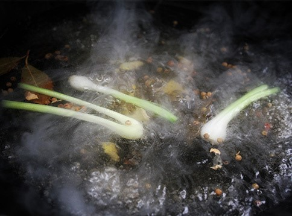
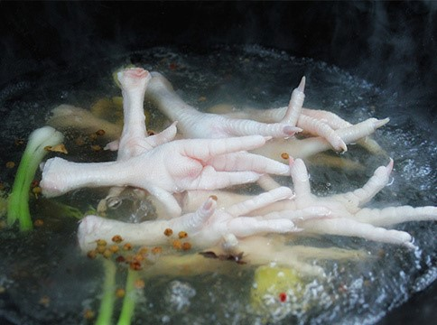
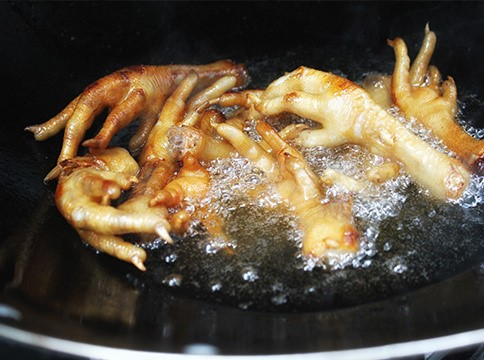
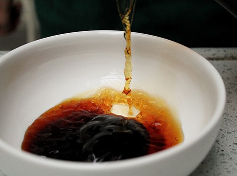
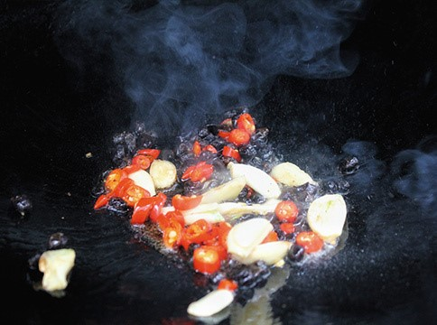
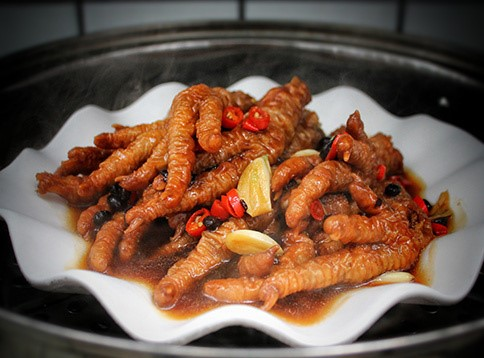
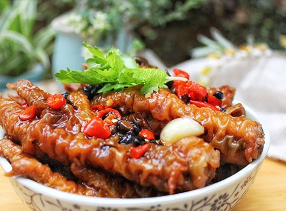
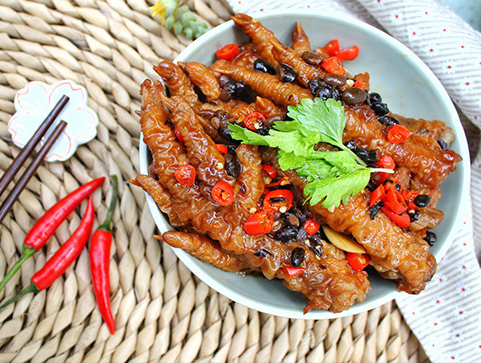

“鸡肉肉质细嫩，滋味鲜美，并富有营养，有滋补养身的作用。鸡肉中蛋白质的含量比例很高，而且消化率高，很容易被人体吸收利用，有增强体力、强壮身体的作用。鸡肉含有对人体生长发育有重要作用的磷脂类，是中国人膳食结构中脂肪和磷脂的重要来源之一。鸡肉对营养不良、畏寒怕冷、乏力疲劳、月经不调、贫血、虚弱等有很好的食疗作用。祖国医学还认为，鸡肉有温中益气、补虚填精、健脾胃、活血脉、强筋骨的功效。”
鸡脚洗净，起锅烧开水，加花椒、胡椒、香叶、白糖、白醋、老姜片、葱白煮开3-5分钟。

倒入鸡脚，中火转小火煮约8分钟迅速捞出，控水备用。

鸡脚放入酱油内上色，起油锅，油温6成时，转小火炸鸡脚逐个慢慢放入油锅中炸直表面金黄，有小泡泡即可。捞出鸡脚立即放入冰水中浸，浸泡1-2小时。

用一个小碗把白糖、生抽、老抽、耗油、料酒、陈醋、盐、鸡精、淀粉混合，调成汁。

起油锅，少许油，把豆豉，红米椒，酸，倒入锅中，小火煽香，再加入料汁，清水，放入浸泡好的鸡脚拌匀后关火。

装盘放蒸锅蒸20分钟即可。

端上台开吃咯！

放入鸡翅，再放入盐、酱油，翻炒均匀

油炸鸡脚和冰水浸泡的时间要把控好，表面才会起泡泡。